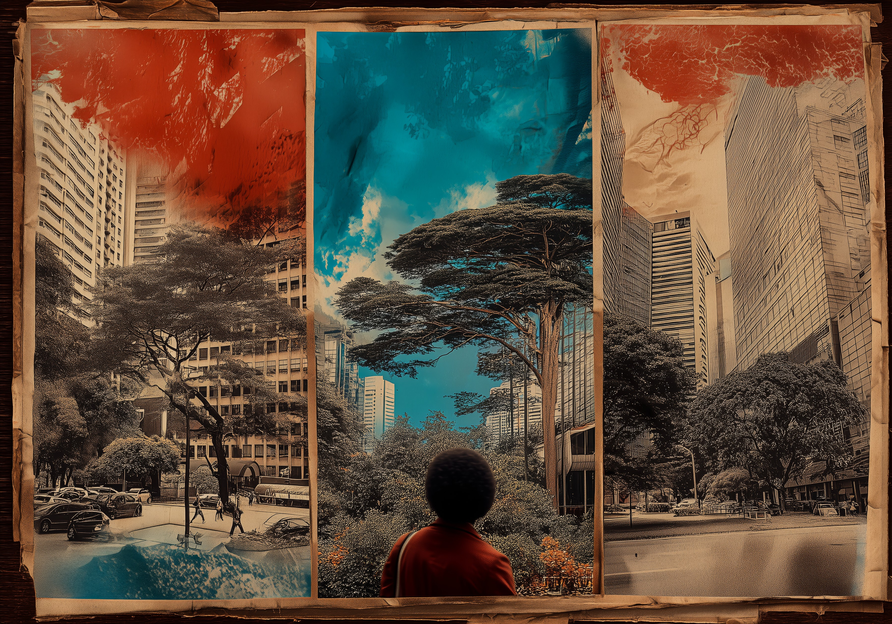
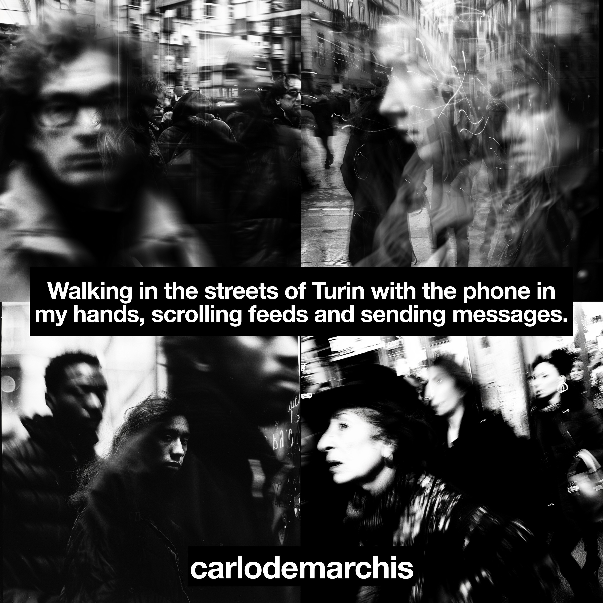

Torino Contemporary Art Week · ottobre 2026
La settimana dell'arte contemporanea da Tono Metzger
carlodemarchis · Photography beyond Photography


Giovedì 29 ottobre
dalle 19
dalle 19
In mostra Walking in the streets of Turin, Quiet Chaos e tempospazio: fotografie generate con l'AI, in bianco e nero e a colori.
Musica con Selectazzz, vinile e digitale. Ingresso libero.
Musica con Selectazzz, vinile e digitale. Ingresso libero.

art.carlodemarchis.it
Tutti i progetti, i photobook, le copertine e le prossime mostre.
Tono Metzger · Torino
Carlo De Marchis · stampe fine art su richiesta
Carlo De Marchis · stampe fine art su richiesta